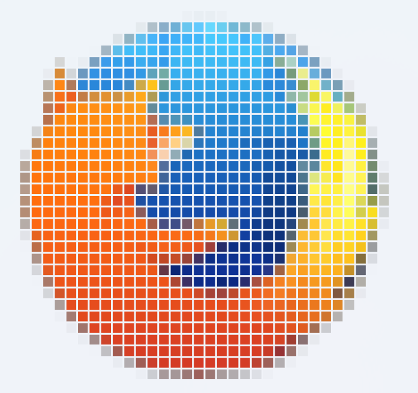

Let’s draw a pixelated image separated by transparent lines in Win2D!
The problem: display a pixelated image with transparent lines between pixels. Like this:

I learned about Win2D completely by accident. I was looking for how to fix blurry image stretching in WinUI. Win2D can draw images with “nearest neighbor” interpolation. So I decided to use Win2D in my small project.
When we scale a small image (for example, icons) at the full window size the image is very pixelated. Separating pixels with lines helps to improve the situation a little bit (see the image above).
We can draw an image and then draw lines on it. But this approach doesn’t support transparency.
Another approach is to use an image brush and fill a group of rectangles with spaces between them (one rectangle per pixel).
The brush fills a rectangle with the part of the image that corresponds to the rectangle. The trick is to scale and translate the brush to the target rectangle:
imageBrush.Transform =
Matrix3x2.CreateTranslation(Convert.ToSingle(left / ScaleFactor), Convert.ToSingle(top / ScaleFactor)) *
Matrix3x2.CreateScale(Convert.ToSingle(ScaleFactor));
left and top - coordinates of the rectangle; ScaleFactor - how many times the image is scaled.
Every pixel-rectangle (square) has size equal to integer part of a number scale factor without the separator line width. I found out that the scale factor must be greater than 5 and line width is 2px. So pixel-rectangle has size 3px and more.
The following code generates pixel-rectangles:
void ImageCanvas_Draw(CanvasControl sender, CanvasDrawEventArgs args) {
var width = ImageSize.Width * ScaleFactor;
var height = ImageSize.Height * ScaleFactor;
var left = (sender.ActualWidth - width) / 2;
var top = (sender.ActualHeight - height) / 2;
imageBrush.Transform =
Matrix3x2.CreateTranslation(Convert.ToSingle(left / ScaleFactor), Convert.ToSingle(top / ScaleFactor)) *
Matrix3x2.CreateScale(Convert.ToSingle(ScaleFactor));
var pixelSize = Convert.ToSingle(scaleFactor);
const int LINE_WIDTH = 2;
for (var i = 0; i < ImageSize.Width; i++)
{
for (var j = 0; j < ImageSize.Height; j++)
{
args.DrawingSession.FillRectangle(
rect: new Rect(
x: left + i * pixelSize,
y: top + j * pixelSize,
width: pixelSize - LINE_WIDTH,
height: pixelSize - LINE_WIDTH),
brush: imageBrush);
}
}
}
Useful links:
-
Loading resources outside of CreateResources (Documentation)
-
Win2D: DirectX-Powered Drawing in C# (YouTube)